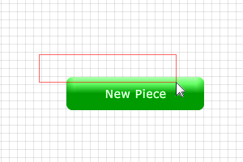

The Excellent Organizational Chart Maker (XORGM) was created to facilitate the development of org charts and flow charts for use in the AFOD Program. The intention is to encourage a common look and feel and to form a standard by which charts are to be presented. This being the initial release, there are still many improvements on the horizon for XORGM 2.0. Please feel free to contact the developers in the Multimedia Lab at CFSAS with comments or suggestions for further editions.
Once XORGM has opened, create a new chart by selecting "New" from the File Menu in the upper left corner of the program.
Upon creation of a new chart, the theme should be picked to correspond with the module theme for this chart in the AFOD Program. This is done with the drop-down menu in the Properties Toolbar, located at the right of the program on start-up.
The behaviour of the various chart items available in the Shape Toolbar (which opens on the left by default) is determined by the use for which that item is intended. For example, the rectangular and circular shapes (which we will simply call Pieces) can not be rotated, and resize based only on the text or Chart Items within them. Pieces, however, can have links attached to them. The arrow shapes (Arrows) can be rotated, stretched, and flipped, but they can not have links attached to them. (Angled arrows rotate in 90 degree increments.) The use of links, as well as Arrow manipulation, will be addressed later in the document.
To place a Chart Item, select it from the Shape Toolbar and click on your canvas.
The canvas grid is on by default, and restricts item movement by ten pixel increments. For finer movement, click the "Toggle Grid" button on the canvas window to remove the default canvas grid. Click it again to make it reappear.

To select a Chart Item on your canvas, click on it using the selection tool. To select multiple items, hold down the Shift key as you select them with the selection tool, or click the selection tool in an empty area of the canvas and drag it to form a selection rectangle.
To move Chart Items you must drag selected Chart Items using the selection tool or nudge them using the arrow keys. For finer movement, use the "Toggle Grid" function.
Delete a Chart Item by selecting it and pressing the Delete key on your keyboard.
To undo an action, click the "Undo" button on the canvas window. To redo an action, click the "Redo" button on the canvas window.
Chart Items can be styled using the Properties Toolbar, which is located at the right side of the program by default. Set the Bevel, Deboss, Drop Shadow, and Stroke attributes using the corresponding check boxes, and select the appropriate fill, text, and stroke colours using the palettes provided. (The stroke colour is only visible when the Stroke attribute check box is checked.)
The Fill Tool is located in the Properties Toolbar. It may be used to alter the fill of a Chart Item by clicking on it after the correct fill colour has been selected from the Fill Colour palette.
The Text Tool is located in the Properties Toolbar. Use it to edit a Chart Item's text by clicking on the Chart Item, selecting the text, and typing your change.
Links can only be created between Pieces (see Overview of Chart Items). To create a link, select the parent Piece(s) (or the originating sibling(s), if applicable) and click the "Make Link" button on the Properties Toolbar. Use the enabled dropdown menus below the "Make Link" button to define the relationship and line style of your link, and then select the Piece(s) to link to. To stop linking, click an empty area of the canvas or click on the Select Tool in the Properties Toolbar.
To save a chart in the XORGM File Format for later use, click the "Save" button on the canvas window, and designate the appropriate file name and location in the dialog box that appears.
To export an image of your chart in PNG file format for use in the AFOD Program, simply click the "Export PNG" button on the canvas window and designate the appropriate file name and destination in the dialog box that appears.
From the File Menu in the top left of the program, select "Open" to open a previously created XORGM file.